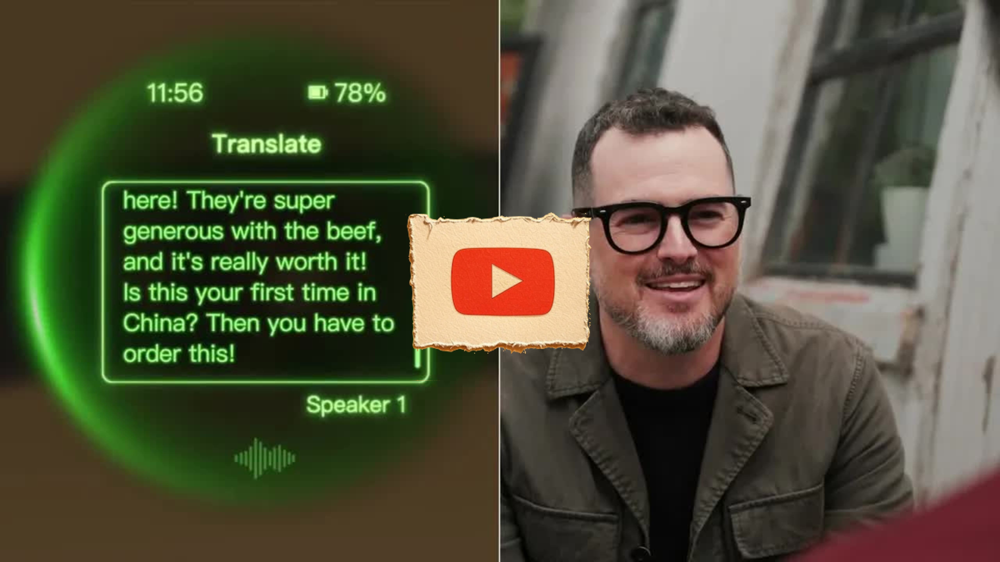

Great Pods
Finally Smart Glasses - Halliday AI Glasses
Key Points
Halliday AI glasses became the most backed AI glasses ever on Kickstarter
They look and feel like regular glasses with an understated, lightweight design
Uses "Digi Window" display technology with micro LED instead of traditional waveguide systems
Display is invisible to others and only visible when you glance up at it
Micro LED creates a discreet virtual screen in upper right field of view
Display can be adjusted horizontally and vertically to match individual eye spacing
Claims up to 12 hours of battery life that can last through a work day
Can respond to text messages with pre-filled AI responses quickly
Includes companion ring for subtle gesture control instead of voice or tapping
Features real-time translation capability displaying foreign language translations
Built-in microphone allows discreet meeting recording with AI-generated summaries
Proactive AI agent can listen and analyze conversations to help formulate responses
Cheat sheet feature syncs grocery lists and notes to the display window
Built-in speakers for audio but not designed for entertainment like music or movies
Provides hands-free GPS navigation directions displayed in the window
Functions more like a "souped up smartwatch" as a phone companion rather than replacement
Best suited for users who want to be more hands-off with their phones throughout the day
Represents the most unique approach to smart glasses technology currently available
Full Transcript
Language: en thank you to Halliday AI for sponsoring this video we've all watched science fiction movies and seen the technology that you know is like never going to happen we're not going suddenly push a button and warp to another location sometimes in the movies you see technology you're like that seems like something we could have something that could actually exist in the real world we've seen the glasses and Minority Report but we never really got something like that instead we got these big goggles that kind of gave us a glimpse of the future but never gave us the full future all right so I've got these all new smart glasses from a company called holiday and these were a huge like runaway hit at Cs and actually they were so big uh they went on to become actually the most backed AI glasses ever on Kickstarter if you spend time on Kickstarter you know there are a lot on there so it's a pretty big deal for Halliday and one of the things that stood out to me I think the biggest thing about them is they don't look like typical smart glasses they look and feel like a regular pair of glasses kind of understated design extremely lightweight it just looks normal the Halliday and the reason they were the most funded AI glasses on Kickstarter history uh for a few reasons I think the biggest one is what they're calling their Digi window display technology techology you've probably seen a lot of glasses similar that kind of project images on the glass itself it's kind of it's called a wave guide system and for a lot of ways that works but what happens with those if you get a lot of sunlight coming in you get bleed uh it can also be really distracting if you're trying to look or talk to somebody and things are coming constantly across your eye so what holiday has done with there sort Digi window technology is they're using a micro LED like a really teeny tiny micro led to create a discreet kind of virtual screen in the upper kind of right field of view which serves a few purposes first it's completely invisible to others and you until you glance up so the digi window display is also going to like adapt to each person using it it's going to let you do sort of horizontal and vertical adjustments you can actually physically move it uh to match individual eye spacing I think with something like this too Comfort is a giant deal uh they've got adjustable nose pads to make sure that the viewing Le is working well for you and also it's not going to dig into the side of your nose the display sits out of your main line of sight this can totally replace your just normal glasses giving you all the perks of AR but also letting you sort of use them in a normal glasses sense that looking like you've got you a pair of Technology sitting on your face holiday claims the AI glasses have up to 12 hours of battery life I've only been able to test these in all fairness for a very limited time but for me that Benchmark is usually just getting through a work day and these can do do that so the next thing that I want to like try is like how easy it's actually like to use let's do something that at least I do many times throughout the day probably you do too just respond to a text so notification window pops up and I can see right away exactly what it is I have some pre-filled AI response I can use to respond quickly which I thought was actually really neat and surprisingly useful so I can use the temple controls on the side here or I can use a companion ring this actually a really interesting way while it sort of might not for everyone I already wear a smart ring so I don't really give it a second thought there's definitely like a learning curve to remembering the gestures and what this does it's pretty cool once you actually get the hang of it allows you to have level of control it can be really more subtle and discreet instead of using your voice or tapping on the glasses themselves and it's really simple design it's got a button on it that I can press I can double tap and also it's touch sensitive so I can swipe up down left or right and it happens very naturally on the other hand uh it does kind of feel like an extra step something else you have to charge and put on be able just see notifications as they come in then using the AI to quickly respond to a few Taps is really useful and kind of like a step above what you can do with an Apple Watch with those times you want to see a message really quickly respond and move on the glasses like serve that use case absolutely perfectly all right so I've got this set up I can respond to a text like what else can I do the tech in the glasses is cool and kind of of a new way to do it uh but like most things it pairs with an app that can enable even sort of more functionality this might be one of the coolest holidays translation feature you can instantly see translations of what others are saying displayed in your Digi window which is really helpful for understanding conversations in foreign languages obviously even if you can't speak them you can also do a lot of customization inside of the app you can change the ringtone and alerts you can adjust a brightness even a silence mode they've got gadgets kind of like widgets to you can pick uh how you want to do it control the rapid button what it's going to do whether you want translation or AI or just an audio memo uh you can also inside of the app set quick replies to messages so you know things like can't talk now or call you later so not take out your phone to do that replying we're about to have a video meeting I love to s be able to S of take some notes and also reference some notes on video pitures that I've prepared we have these pitch meetings about every week sort of get our videos ready for the upcoming 10 days the holiday AI glasses this instance I think make things a lot easier so there's no camera built in here which I think is really good in some ways and a limitation in others but it does have a built-in microphone and I can pretty discreetly record the meeting even go back and reference the recording or check out an AI generated summary later on that alone I thought was nice but kind of what else it does I thought was pretty cool too I'm able to activate holiday's sort of proactive AI agent sort of put it to work for me it's always able to sort of listen analyze conversations so the question comes my way can help me come up with an answer relatively quickly so this next one is called cheat sheet do with it what you will but let's say you want to create like a grocery list in your holiday app and instantly syncs your digit window display letting you check off items at your shop without pulling out your phone or juggling a paper list it's a way to kind of show notes uh or to-do list or reminders discreetly in that window well you can't listen to music on the glasses there speakers built in definely not going to sound as good as proper headphones or even your phone speaker but just to be clear these are more geared towards productivity and they are like playing games or watching movies looking for a a movie theater on your face like this is not going to be the solution but I don't think that's a bad thing I think it's important to set your expectations for what the glasses can do all right so the video is almost done getting hungry some restaurants that opened up by a studio I want to get some directions on where to go knows about me that's the direction so GPS myself everywhere and in concept videos I've always portrayed Smart Glass being able to sort of put directions right to the real world augment the reality style and while this isn't an AR experience with the big floating arrow on the corner of the street does give me handsfree navigation directions right to display I think the best way I can kind of describe it is like a smartwatch like souped up it's here to complement the full phone experience in a way that tries to be I think more stylish and discreet all right so back to the original question like our smart glasses here to replace your phone absolutely not at least not yet I'm not ditching my phone anytime soon but smart glasses are actually worth it in 2025 and what the holiday glasses offer I think is the best part of a mini display with the smarts of an AI assistant this is not going to be or is it trying to be at all your smartphone replacement it's not a on to one equivalent but is a really awesome companion especially if you want to be more hands off with your phone you know generally throughout the day and if you want to learn more about the holiday AI glasses check them out at the link below if you're interested in the world of wearables and the future of smart glasses this is the most unique approach that I've seen to this world I think holiday absolutely nailed it
← All Summaries
Watch on YouTube